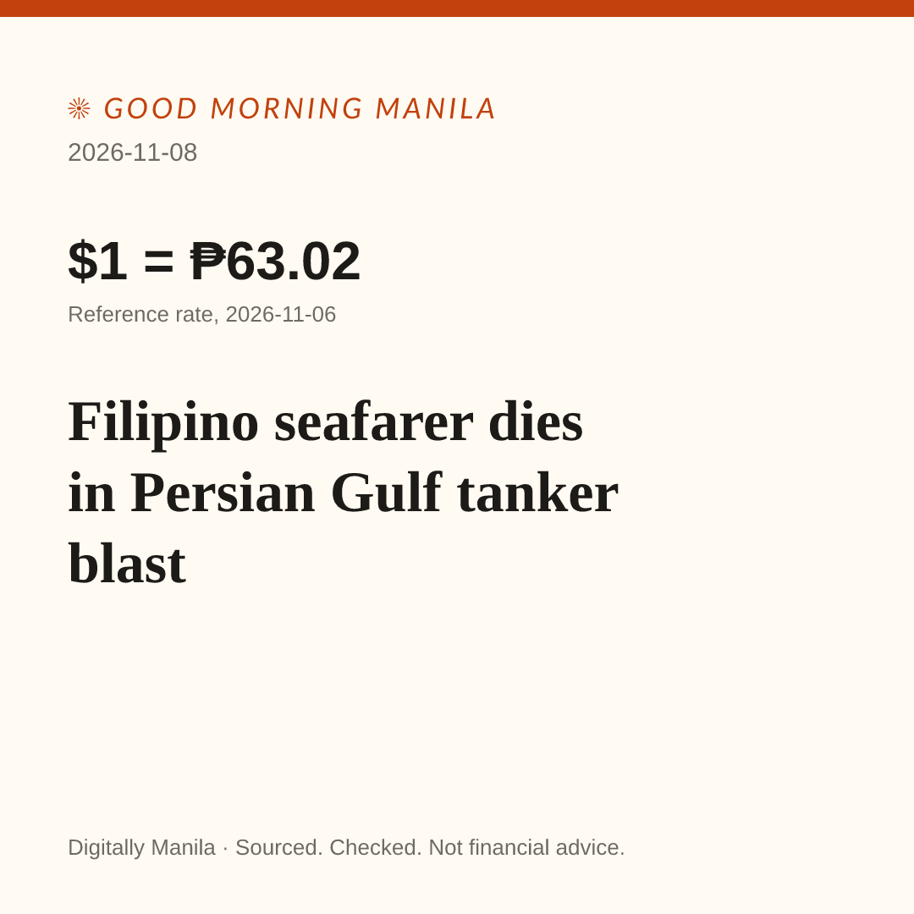

Post for Digitally Manila, 2026-11-08
Read it all first. Nothing here posts by itself. Edit freely.
1. Image

Save image On a phone: press and hold the image, then Save.
Read it all first. Nothing here posts by itself. Edit freely.

Save image On a phone: press and hold the image, then Save.